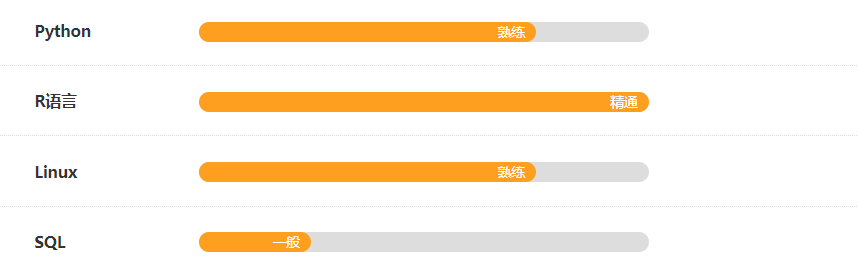

陆嘉伟 / Jiawei Lu
生物信息分析工程师 / Bioinformatics Analysis Engineer

 https://lujw666.gitbook.io/learn/
https://lujw666.gitbook.io/learn/
关于我
本人进取主动、独立性强、具有高度的职责感和敬业精神，待人真诚、诚实守信、团结协作意识强，能够吃苦耐劳，勇于挑战新事物，具有必须的开拓创新本事。
具备丰富的工作经验，认真踏实负责，熟练掌握python/R/shell语言，熟悉git、gitlab等项目开发协作平台的使用，掌握SQL使用。
工作经历
上海鹿明生物科技有限公司 2018/9-至今
生物信息分析主管
工作描述:
- 负责管理生物信息分析部组日常分析工作；
- 组织及负责生物信息分析平台搭建及维护;
- 根据文献和客户需求完成个性化分析需求，并配合其他部门解决数据分析相关问题;
- 负责达成公司生物信息开发、维护和升级已有生物信息分析流程，对数据分析流程进行优化；
教育经历
江苏大学 生物技术 本科 2011/9-2015/7
专业描述：
本科阶段主修：生物化学，无机化学，有机化学，物理化学，细胞生物学，微生物学，植物学，动物学，生化分离工程，基因工程，发酵工程，酶工程，细胞工程，遗传学，分子生物学，生物信息学，蛋白质组学，食品生物技术。
培训经历
超级经理人 上海大企之道有限公司 2019/10-2020/10
培训描述：
以企业中高层管理团队为培养对象的系统化训练模式，既是目前富有成效的团队素质提升系统，也是推动组织目标高效达成的支持体系
技能特长
